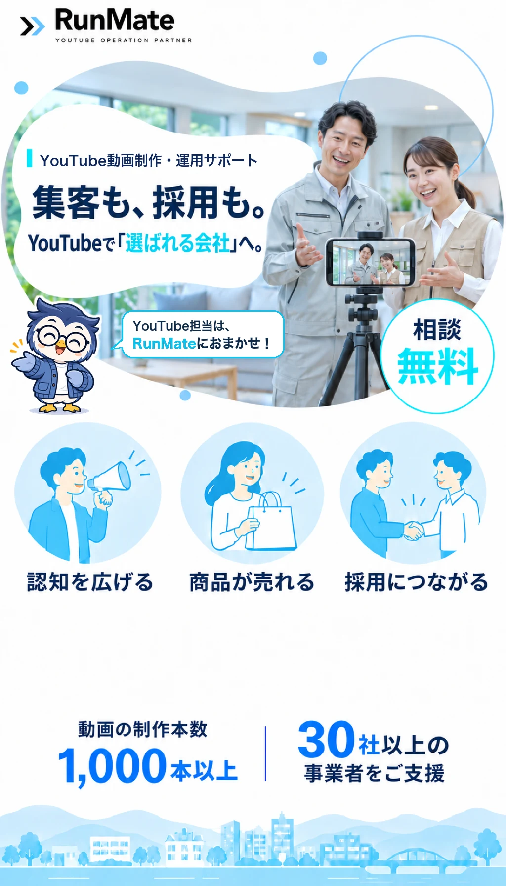
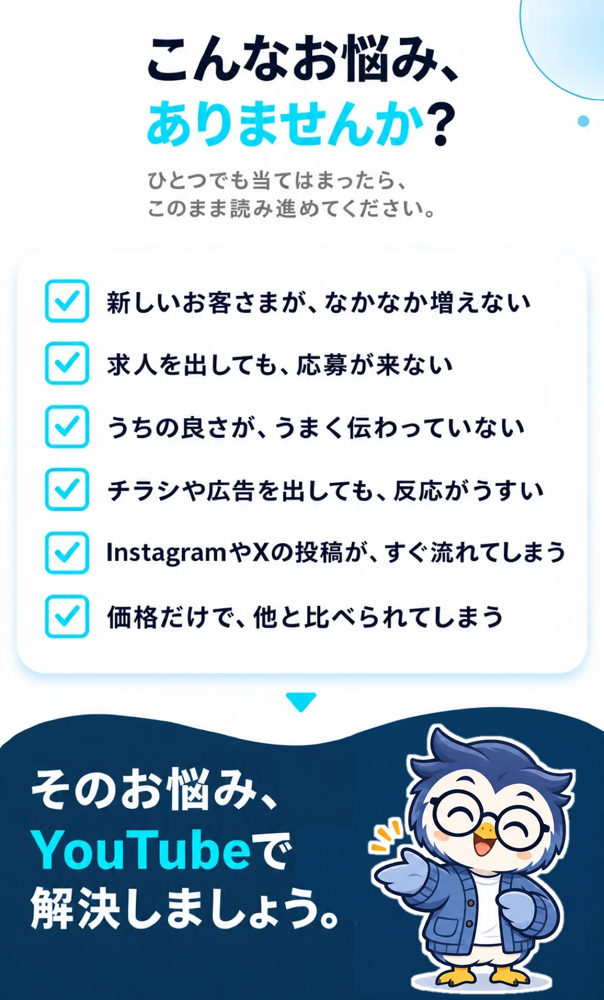
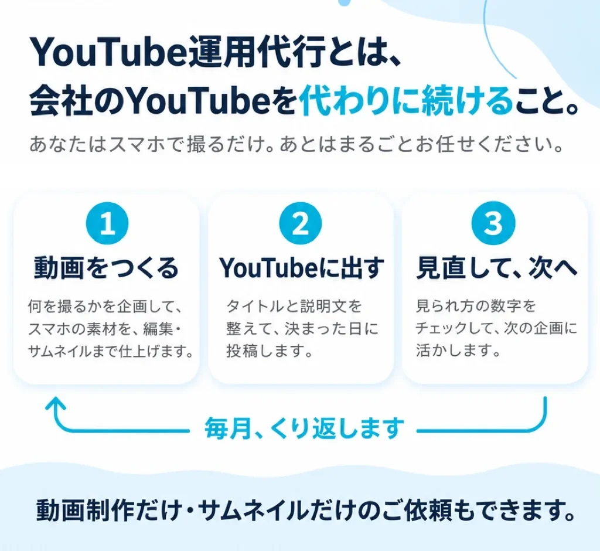
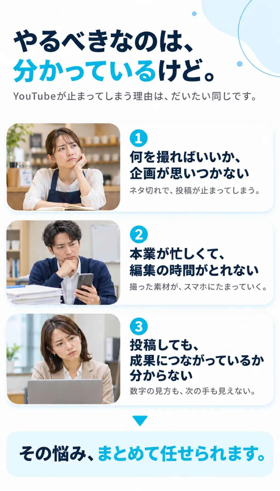
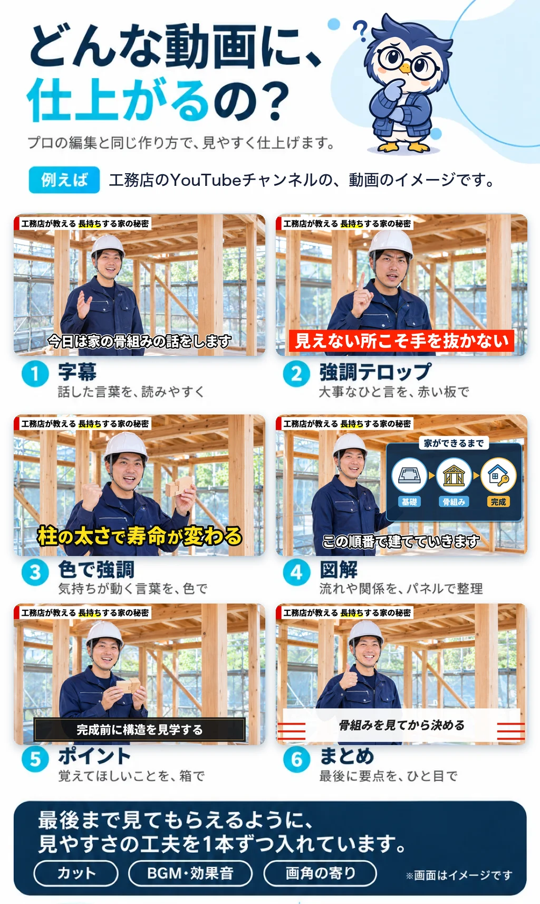
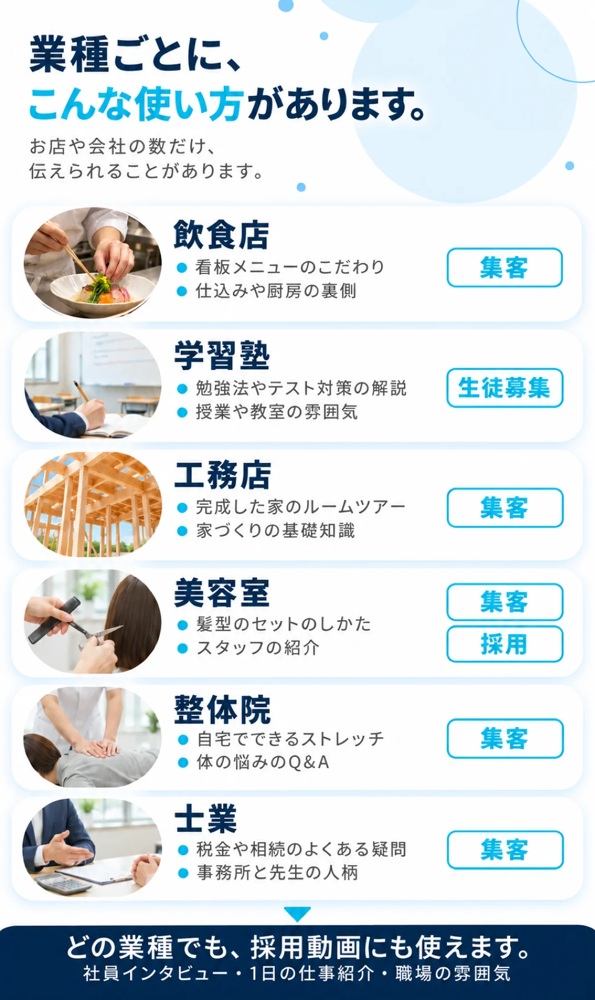
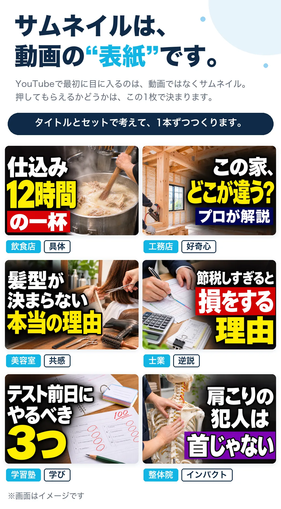
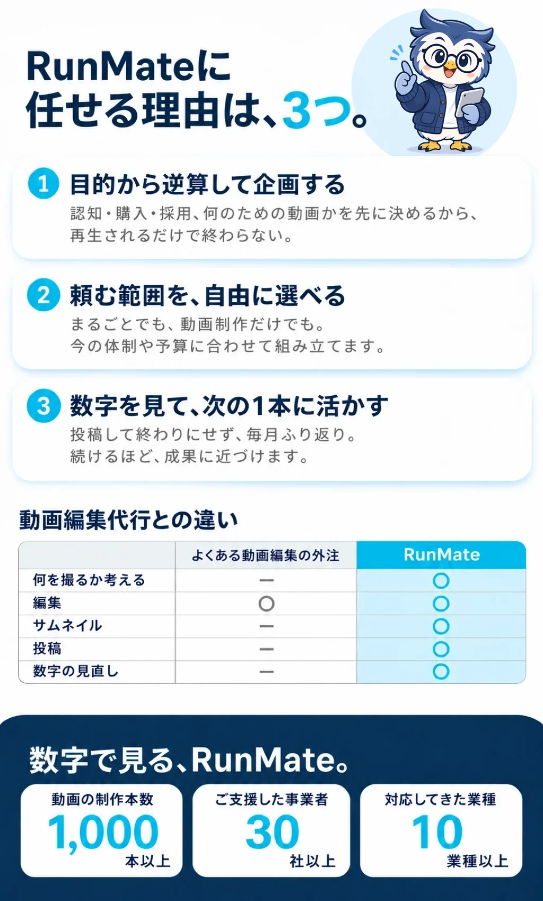
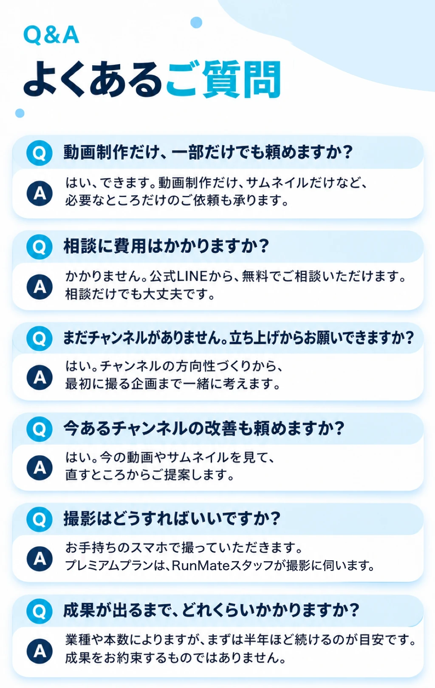
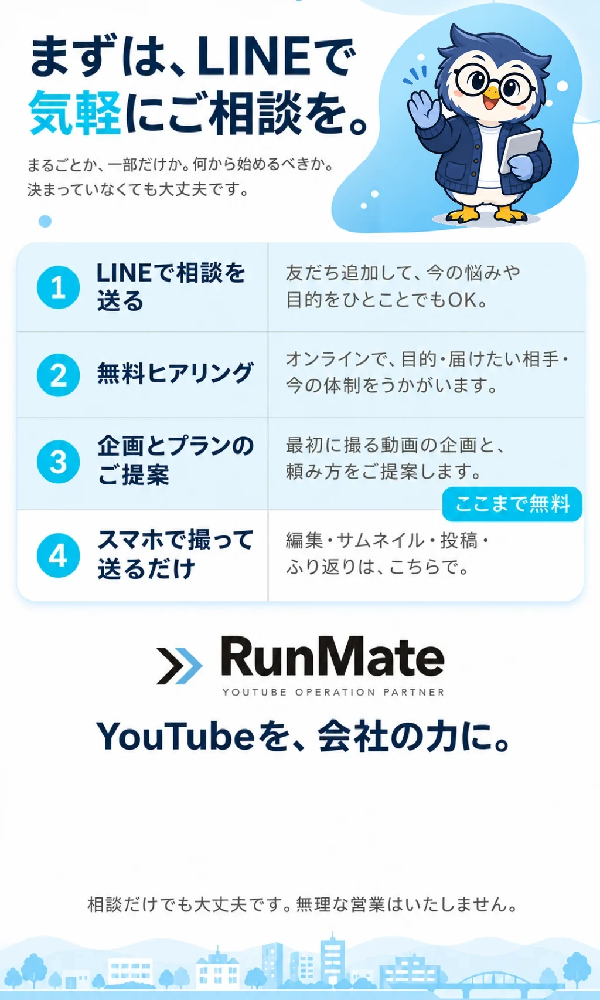

集客も、採用も。YouTubeで「選ばれる会社」へ。

初月35%OFF公式LINEで無料相談 →こんなお悩み、ありませんか？

YouTube運用代行とは、会社のYouTubeを代わりに続けること。

なぜ今、YouTubeなのか。

やるべきなのは、分かっているけど。

どんな動画に、仕上がるの？

業種ごとに、こんな使い方があります。

無料相談で、あなたの会社に合う企画案をご提案します
サムネイルは、動画の“表紙”です。

RunMateに任せる理由は、3つ。

頼み方は、3つから
選べます。
まずは1本で仕上がりを見てから、毎月の運用に進むこともできます。
| まずは1本動画制作 だけ3万円〜/1本（税別） |
おすすめ毎月続けたい方にスタンダード プラン月額15万円（税別） |
撮影もおまかせプレミアム プラン月額38万円（税別） |
|---|---|---|
| 毎月の本数 | ||
| 通常動画（横型） | ||
| 1本ずつ | 月4本 | 月8本 |
| ショート動画（縦型） | ||
| — | 月4本 | 月8本 |
| おまかせできること | ||
| サムネイル | ||
| 1枚5千円〜 | ✓ | ✓ |
| 設計・企画・台本 | ||
| — | ✓ | ✓ |
| 投稿 | ||
| — | ✓ | ✓ |
| 分析・レポート | ||
| — | ✓ | ✓ |
| 月次ミーティング | ||
| — | ✓ | ✓ |
| 撮影 | ||
| 出張撮影 | ||
| — | — | 月1回 |
出張撮影は、RunMateスタッフが全国に伺います。交通費は別途かかります。
- はじめるときの初期費用0円
- 地域を問わず全国対応
- 期間のしばりなし最低契約なし
参考：料金を公開している運用代行13社では、いちばん多い価格帯が月38万〜50万円で、初期費用が別にかかる会社が多くなっています。本数・含まれる作業・撮影の条件は、会社ごとに異なります（各社の公開情報より・税別）。
詳しい料金は、LINEの無料相談でご案内します。
どの頼み方が合うか、そのままご相談いただけます
よくあるご質問

まずは、LINEで気軽にご相談を。

初月35%OFF公式LINEで無料相談 →